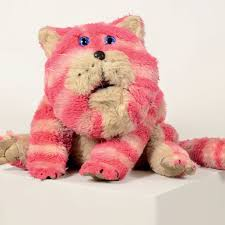
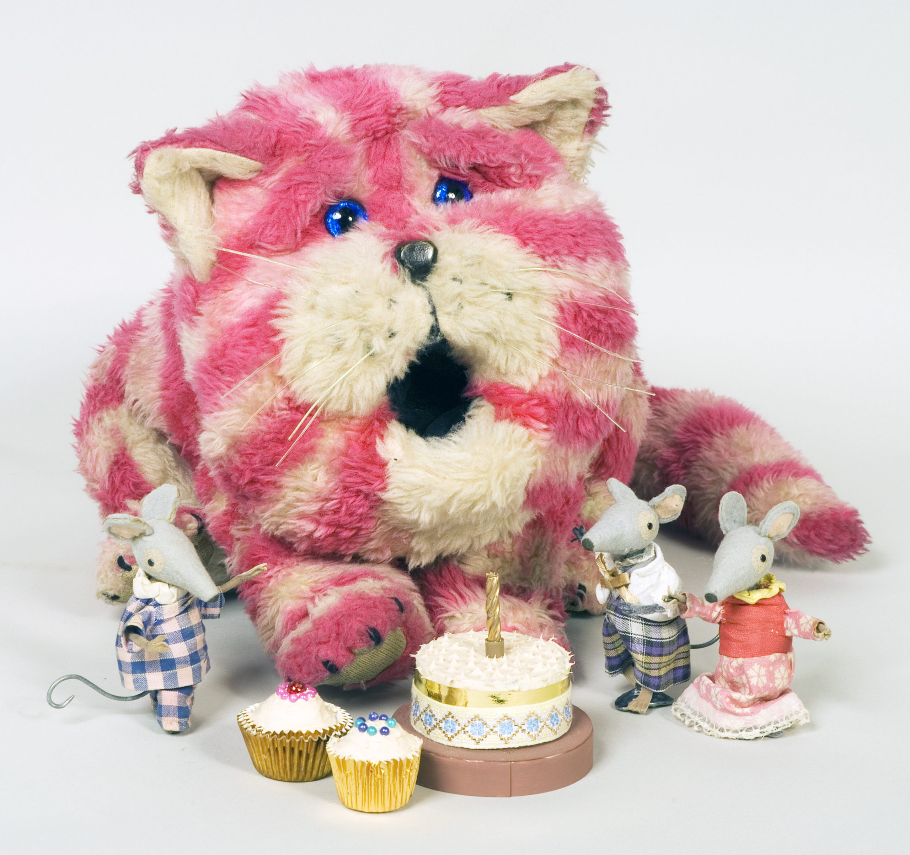
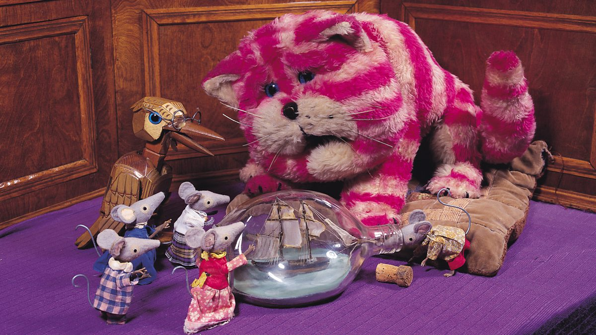

All about Bagpuss
Bagpuss is a British animated children's television series which was made by Peter Firmin and Oliver Postgate through their company Smallfilms.
Bagpuss Images
  Bagpuss and his friends are toys in a turn of the century shop for `found things'. When young Emily brings them a new object, the toys come to life to work out what the strange new thing could possibly be.
- Final episode date: 7 May 1974
- Narrated by: Oliver Postgate
- Program creators: Oliver Postgate, Peter Firmin
- Production company: Smallfilms